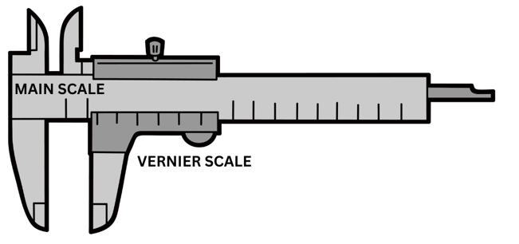

Vernier Caliper

Data
Reading : Main scale
=
cm
Reading : Vernier scale (position in line)
=
Value of smallest division main scale
=
cm
No. of small division on vernier scale
=
Zero error (if available)
=
cm
Note :
- Main Scale - reading on the main scale just before the zero mark on the Vernier scale
- Vernier Scale - reading on the Vernier scale that exactly in line with the main scale
- Zero error - zero mark of the vernier scale does not coincide with the zero mark of the main scale
- Obtained reading = Main Scale + Vernier Scale
- True reading = Obtained reading - (Zero error)
Result
OBTAINED READING
=
cm
TRUE READING (with zero error)
=
cm